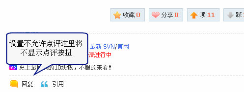
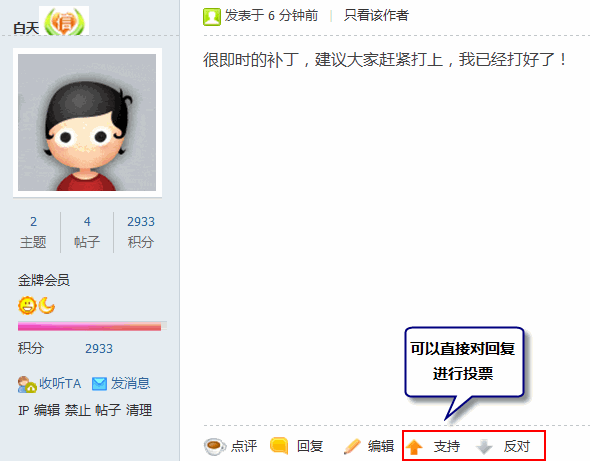
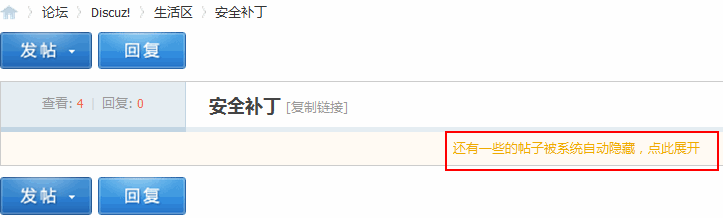

1.18. 站点功能¶
站点功能
站点功能可以对站点的所有功能模块进行关闭和开启；管理统计、主题评价、帖子点评、导读、活动、帖子阅读和其他的一些设置进行基本的管理操作，功能包括功能模块、管理相关、主题热度、主题评价、帖子点评、导读设置、活动主题帖子阅读和其他的一些基本操作。
操作路径：【后台】=>【全局】=>【站点功能】
一、功能模块
在这里可以单独开启门户、群组、广播、淘帖、导读、动态、日志、相册、分享、记录、留言板和排行榜功能，开启后也可以随时关闭，非常方便。
应用场景：小赵是河北一个县城的站长，他想把自己的论坛升级到 Discuz!X 系列，可是总感觉用不上门户和群组等其它功能，只要论坛就可以了，如果加上门户，总感觉内容有些单一，现在小赵完全不用担心了，只要升级站点后，在这里关闭门户、群组、广播、动态、日志、相册、分享、记录、留言板就可以了。
操作步骤：直接在功能模块后点击“关闭”链接就可以了。
开启模块的操作步骤：直接在功能模块后点击“开启”，然后选择在主导航或者快捷导航中显示该模块。
二、管理相关
可以对站点趋势统计、论坛管理工作统计、论坛 Archiver 功能、管理记录保留时间、删帖不减积分时间期限、管理操作及用户评分理由、隐藏敏感帖子内容、自动禁言和警告有效期、悬赏主题有效期以及版主面板显示审核数进行操作。
1、开启站点趋势统计 选择“是”站长可以通过站点趋势统计了解到站点的运作状况。注意：本功能会轻微加重系统负担 开启后，站长可以在前台看到站点每日的发展概况。通过每日的趋势变化，为站长运营站点提供科学的数据基础。
同时可以通过综合概况了解到站点的综合概况发展统计，包括来访用户、新注册用户、论坛、群组、家园和互动。
2、开启论坛管理工作统计 论坛管理工作统计可以使版主、管理员了解论坛版主等管理人员的工作状况。注意: 本功能会轻微加重系统负担
3、开启论坛 Archiver 功能 论坛的 archiver 功能简单理解就是一个简洁页面，利于搜索收录信息。开启后，会在站点的页脚处显示，如下图所示：
点击这里会跳转到一个简洁页面，效果如下图所示：

4、管理记录保留时间(月) 系统中保留管理记录的时间，默认为 3 个月，建议在 3～6 个月的范围内取值。
5、删帖不减积分时间期限(天) 设置版主或管理员从前台删除发表于多少天以前的帖子时，不更新用户的扩展积分，可用于清理老帖子而不对作者的扩展积分造成损失。0 为不使用此功能，始终更新用户积分。
应用场景：小林是某站点的老会员，该站点的管理人员维护站点时发现站内的老数据太多，而且很多已经没有太多的价值，而且都是几年前的老帖子，为了让站点访问速度更快，不得不删除一些旧的帖子，那么管理人员在前台选择删除发表于一年前的帖子后，被删除帖子的会员的积分不会改变。
6、管理操作理由选项 本设定将在用户执行部分管理操作如删除帖子时显示，每个理由一行，如果空行则显示一行分隔符“——–”，用户可选择本设 定中预置的理由选项或自行输入，在前台进行管理操作时，效果如下：
7、用户评分理由选项 本设定将在用户执行评分时显示，每个理由一行，如果空行则显示一行分隔符“——–”，用户可选择本设定中预置的理由选项 或自行输入，在前台进行评分时，效果如下：
注意：在评分之前需要该用户组有允许参与评分的权限，开启方法：【后台】=>【用户】=>【用户组】=>【其它】=>【积分相关】中，设置如下图所示：
8、隐藏敏感帖子内容 选择相应项目将隐藏被删除或被禁止的用户的相关资料，在相关资料处显示被屏蔽的字样。分别为可隐藏帖子内容、用户头像和用户签名，比如我们选择隐藏帖子内容和用户头像，在前台当会员被禁止后显示效果如下：
9、用户被警告多少次自动禁言 这里填写用户被警告的次数，达到这个数字后将会自动禁止发言，配合警告有效期进行设置，警告有效期结束自动解除禁言。
10、悬赏主题有效期 设置悬赏主题的有效天数，当悬赏主题超过有效期后依然未发放悬赏，版主或管理员有权代为主题作者发放悬赏。0 或留空表示不允许版主或管理员进行此操作。
三、主题热度
主题热度将按参与人次计算，包括回帖，点评，收藏，分享，评分，推荐； 不同用户组会员的主题评价影响值不同，可以配合用户组中的设置进行操作。
主题热度中有两项基本的设置：用户热度值周期和热门主题显示级别。
1、用户热度值周期(天) 以天为单位，一个周期内某用户多次参与主题，只加一次热度。0代表不设置周期，只要参与一次，热度就加1。为避免用户刷热度，建议不要设置为0。(回复、点评、评论、收藏、分享等都算作参与主题的动作)
举例：这里的值为 15 ，那么在15天内，小林多次参与了同一个主题的回复、点评、评论等操作，均只加一次热度值。
2、热门主题显示级别 设置主题列表页主题图标每一级别对应的热度指数。 举例：这里设置的值为 50，当主题的热度值达到 50 的时候，主题列表页的显示效果如下图所示：
四、主题评价
需要结合用户组的设置进行主题点评，不同用户组会员的主题评价影响值不同。 和用户组相关的设置如下： 操作路径：【后台】=>【用户】=>【用户组】=> 编辑用户组 =>【论坛相关】=>【帖子相关】可以看到如下图所示的设置：
这个值主要用来设置用户评价一次主题，对主题评价指数的影响，0 为不允许用户评价主题。即使在【后台】=>【全局】=>【站点功能】中开启主题评价也不可以参与评价。
主题评价的详细设置：
加分操作文字：设置评价加分的文字，不宜过长。建议使用“顶”、“支持” 减分操作文字：设置评价减分的文字，不宜过长。建议使用“踩”、“反对” 在帖子内容页的显示效果如下：
每 24 小时评价主题次数：设置用户每 24 小时可以评价多少篇主题，0 或留空为不限制。 是否允许评价自己的帖子：评价自己的主题无积分奖励。 评价图标显示级别：设置主题列表页评价图标每一级别对应的评价指数，我们建议您设置 3 个级别，1 级及以上级别的主题会在主题列表页“查看好评主题”中列出。
举例：这里填写的值为 50,100,200，如果主题的评价指数大于或等于 50 的话，就会主题列表页显示评价图标，效果如下图所示：
评价图标也可以自行修改，存放在站点的下列目录中。 ./static/image/common/recommend_1.gif /static/image/common/recommend_2.gif /static/image/common/recommend_3.gif
五、帖子点评
当有会员发表了一个帖子，其它有权限的会员可以发表不同的观点，或是赞同、或是反对、或是发表自己的独到见解，阐明自己的观点都可以，就同微博的评论一样好用。被点评过的帖子作者会马上收到通知，点评内容会显示在作者的帖子内容下方，一目了然。
同时当用户对一个帖子的内容感兴趣时，也可以直接在该帖内对其进行点评，使用户之间的交流更加直接，对话题的讨论更加具有针对性，用户与用户之间内容讨论的更加有深度和广度。
1、点评的开启及显示设置 可以设置点评方式、点评的条目数、是否可以点评楼主帖和自己的帖子、普通主题和特殊主题点评的预置观点，预置观点可以根据自己需要任意填写，每行一个观点，如下图所示：
点评方式：分为直接点评和楼层回复 “直接点评”即通过帖子每楼层中的“点评”链接发表点评 “楼层回复”即通过帖子每楼层中的“回复”链接发表回帖时，自动对该楼层产生点评。 注意：点击主题中的“回复”链接，不会对主题产生点评。开启任意一种点评方式都需要在用户组中设置点评权限。 点评条目数：在帖子中显示点评的条目数。如果数目较多，可以分页显示。
我们以普通主题点评预置观点为例：如果在这里设置了观点，会员在前台点评帖子的时候效果如下：
多人点评后，效果如下，可以在这里尽情的 PK，同时也可以阐明自己的观点。
2、用户组的点评权限设置
在论坛的全局开启了帖子点评功能后，可以通过对用户组的设置进一步细化点评功能，设置是否允许该用户组中的用户点评帖子，以及对点评帖子的范围进行约束，如仅允许点评楼主帖、回复帖，或允许点评所有帖子等。在全局的帖子点评中预置了点评观点后，还可以设置是否允许该用户组发表点评观点。
操作路径：【后台】=>【用户】=>【用户组】=>【编辑】=>【论坛相关】=>【帖子相关】中设置，如图所示：
所以，点评功能必须是【后台】=>【全局】=>【站点功能】=>【帖子点评】的设置 和 【后台】=>【用户】=>【用户组】=>【编辑】=>【论坛相关】=>【帖子相关】中的点评设置接合使用，才会更完美。
3、点评功能的前台显示
六、导读设置
站长需要将社区最具争议的、最新热门的、最近精华的、最新查看的等等各种“最”的话题集中的展示给用户，吸引会员浏览而不流失。并且这些都是由系统自动完成。
传统的排行榜已经不能满足站长需要，一成不变的内容对用户的吸引有限。在排行榜基础上推出的社区导读，可以让用户第一时间找到社区的精华内容，提升用户的留存率，提高用户对社区的黏度。社区导航在论坛导航条具有独立的入口，方便会员点击进入导航页面，查看各种精华帖、热点帖、争议帖等等。
社区导读功能完全解放了社区编辑，不需手工操作完全自动生成。站长可在 Discuz! 后台直接开启此功能即可使用。
热度值聚合下限：默认为 3 ；收集热门主题时的热度值下限，帖子热度达到这个数字，将会聚合在导读中。
效果如下：
热帖聚合时间范围：可以选择热帖聚合的时间段，分为一周、两周、一个月和三个月。
精华聚合时间范围：可以选择精华帖的聚合时间段。
七、活动主题
活动主题主要设置活动帖的相关设置，包括活动类别、活动发起者可选的必填活动资料项、用户发起活动时自定义资料项数量的设置、参与消耗积分的活动时使用的积分以及用户列表每页显示参与活动的人数设置。
1、内置类别：将在用户发起活动时显示的活动类别。这里填写如下：

当用户发起活动时，显示这里的活动类别供选择。
2、活动发起者可选的必填资料项 这里的用户资料项和【后台】=>【用户】=>【用户栏目】中开启的用户资料项是同步的，可以在这里勾选用户发起活动时可选择的必填资料项，也可以增加资料项，如下图所示：
(点此新增资料项)会直接跳转到【用户栏目】中，新增用户资料项。
3、扩展资料项数量 除了这里的用户资料项外，也可以让用户发起活动时自定义资料项。 举例：这里填写的数量为 3 ，当用户发起活动时，可以不选择默认的用户资料项，可以自定义 3 个用户资料项 ，如：
4、使用积分 指的是活动参与者需消耗的扩展积分。 举例：这里选择的是金钱，当用户发起活动时，消耗的积分为用户的金钱数量。
5、列表用户数
用户列表每页显示参与活动的人数
八、帖子阅读
可以在这里开启回帖投票、用户黑名单隐藏、设置推荐回复数、设置水帖的字数等相关设置，这里的水帖只针对回复。
1、启用回帖投票
选择“是”用户可以对回帖进行“支持”、“反对”操作。
2、启用用户黑名单
选择“是”用户可以通过将其他用户加入黑名单的方法，隐藏指定用户的帖子。
帖子被隐藏后的效果如下：
3、推荐回复数
系统根据回帖评价和水帖情况，在主题第一页推荐回帖。
4、水帖字数
系统判断水帖的条件，小于此数值的帖子会被判断为水帖，0 为不过滤水帖。
5、推荐回复时推荐非水帖
启用后会在第一页推荐回复处推荐非水帖。
6、启用隐藏水帖
开启后系统判断为水帖的回复会被自动隐藏。
7、水帖不能参与回帖投票
开启后系统判断为水帖的帖子将不能参与回帖投票。
九、其它
其它设置项里主要包括用户登录的密码加密、登录帐号选择问题，RSS 的相关设置、用户在线时间的相关设置、好友短消息的接收情况、@功能的相关设置及淘帖专辑的共同维护人、小黑屋等的设置。
1、启用登录密码加密 选择“是”，站点登录时的密码将进行加密后再传输。
2、启用UID登录
选择“是”，站点登录时允许通过 UID的方式登录验证。
3、启用登录自动选择帐号 选择“是”，站点登录时的将自动按 UID、E-mail、用户名的顺序逐一去匹配
4、启用 RSS 选择“是”，将允许用户使用 RSS 客户端软件接收最新的帖子、文章更新。
点击这里的“订阅”即可接收该版块最新帖子、文章更新的订阅。 5、RSS TTL(分钟) 配合上面一项启用RSS进行使用，TTL(Time to Live) 是 RSS 2.0 的一项属性，用于控制订阅内容的自动刷新时间，时间越短则资料实时性就越高，但会加重服务器负担，通常可设置为 30～180 范围内的数值。
6、用户在线时间更新时长(分钟) Discuz! 可统计每个用户总共和当月的在线时间，本设置用以设定更新用户在线时间的时间频率。例如设置为 10，则用户每在线 10 分钟更新一次记录。本设置值越小，则统计越精确，但消耗资源越大。建议设置为 5～30 范围内，0 为不记录用户在线时间。
7、显示程序运行信息 选择“是”将在页脚处显示程序运行时间和数据库查询次数
8、全站是否默认只接受好友短消息 选择“是”将在个人短消息设置中，默认只接收好友的短消息。
9、接收短消息举报人(UID，多人使用英文逗号分隔) 这里填写当会员举报帖子时接收举报提醒的管理人员 UID号，可方便管理人员及时处理发送垃圾短信的用户，留空表示不启用短消息举报功能。 举例：当用户浏览站点时发现了一个违规帖或者广告帖，点击帖子右下角的“举报”链接 ，如下图所示：
当用户举报后，这里所填写的接收短消息举报人将收到一条新的提醒，如下图所示：
10、发帖时可@任何人 选择“是”发帖子时不仅可以@好友，也可以@非好友。更详细的@功能介绍请参考： @功能强势来袭 让用户和内容“舞动”起来之使用篇.
11、群聊消息内容自动刷新间隔(秒) 用于群聊消息内容刷新，间隔时间越短对服务器压力越大，0为不刷新。 群聊消息页面如下：
这个设置主要是刷新该页面的时间间隔。
12、淘帖专辑允许共同维护的人数
这里的设置主要解决一个人同时创建了好几个淘专辑，想邀请好友一起来维护的情况，以保证淘专辑内容的质量。 更详细的淘帖功能介绍请参考：`淘帖 让好帖无处藏身 <http://www.discuz.net/thread-2538635-1-1.html>`_.
13、提醒添加桌面快捷的积分下限
大于等于设置积分的用户将看到添加桌面快捷的顶部提醒，效果如下：
点击“添加 Discuz! Board 到桌面”会提示您下载到桌面快捷，可移动文件到系统桌面。
14、关闭主题列表页排序功能
选择“是”用户将只能按默认排序查看，否则，用户自选排序将会增加系统压力。
15、开启小黑屋
选择“是”将开启小黑屋，用户可以在右下角导航中进入小黑屋，查看被禁言禁止访问用户。
16、全局签名内容
该设置必须开启签名后有效，如果用户没有设置签名就显示该签名内容